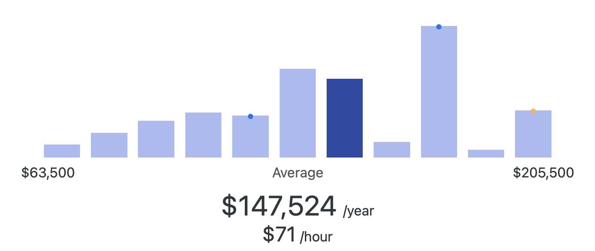

Software Engineer Career Opportunities
Average Salary
$147,524 per year.

What Do Software Engineers Do?
Software engineers design, develop, test, and maintain computer software and systems. They apply principles of computer science, mathematics, and engineering to create applications, platforms, and tools that solve real-world problems. Software engineers often specialize in areas such as web development, mobile apps, artificial intelligence, or cloud systems. Collaboration, problem-solving, and continuous learning are key parts of the job.
Companies Offering Opportunities
Here are some companies that regularly hire or provide internships for software engineers:
- Paycom (Headquartered in Oklahoma City – software solutions company)
- Devon Energy (Oklahoma City – opportunities in tech/software teams)
- Chesapeake Energy (Oklahoma City – IT and software development roles)
- Love’s Travel Stops & Country Stores (Oklahoma City – strong IT division)
- Amazon (national, internships and jobs in various locations)
- Microsoft (national, large-scale software engineering internships and jobs)
- Google (national, competitive software engineering internships and jobs)